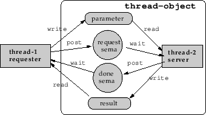
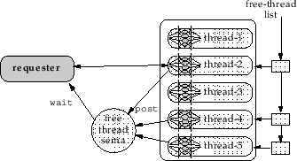

Subsections
Multithread
The multithread is the concurrent and asynchronous programming facility
on the Solaris operating system.
Asynchronous programming is required for programs to respond to
external events via multiple sensors occurring independently of
the program's state.
Parallel programming is effective to improve performance of
computation bound processing such as image processing and interference
checking in path planning.
Multithread EusLisp (MT-Eus) runs on the Solaris 2 operating system
with one or more processors. Solaris's threads are units for allocating
CPU in a traditional UNIX process, having shared memory and different
contexts. The thread library provided by the Solaris OS allocates each
thread to a single LWP (light weight process), which is a kernel
resource.
The Unix kernel schedules the allocation of LWPs to one or more
physical CPUs based on thread priorities assigned to each thread.
Fig.5 depicts the relations between threads, LWPs, and CPUs.
Two major changes in the design of the contexts and the memory management
of EusLisp have been made to upgrade it to multithread capabilities.
MT-Eus allocates private stacks and contexts to each threads
so that they can run independently of each other. Objects
such as symbols and conses are allocated in the shared heap
memory as in sequential EusLisp.
Therefore, thread-private data such as block labels,
catch tags, and local variables
are protected from other threads, whereas values (objects)
pointed by global variables are visible to all threads allowing
information exchange among threads.
Figure 5:
Solaris operating system's thread model
|
|
A context consists of a C-stack, a binding-stack and frame
pointers that chain lexical blocks such as lambda, block, catch,
let, flet, and so on, and is established when a new thread
is created. Since more than one context can be active at
the same time on a real multi-processor machine, we cannot
hold a single pointer to the current context in a global variable.
Rather we have to add one more argument to every internal
function to transfer the context pointer from the topmost eval
to the memory manager at the bottom.
EusLisp adopts a Fibonacci buddy memory management scheme in a
single heap for every type of object.
After running programs having
different memory request characteristics, we have been convinced that
Fibonacci buddy can allocate objects of various sizes equally fast,
garbage-collects quickly without copying , and exhibits high memory
utilization (the internal loss is 10 to 15% and the
external loss is negligible).
For multithreading, the second point, i.e., non-copying GC, is very
important.
If addresses of objects were changed by copying-GC, pointers in the
stack and CPU registers of all thread contexts would have to be
redirected to new locations, which is impossible or very difficult.
All memory allocation requests are handled by the alloc function at the
lowest level.
Alloc does mutex-locking because it manipulates the global
database of free lists.
Since we cannot predict when a garbage
collection begins and which thread causes it, every thread must prepare
for sporadic GCs. All pointers to living objects have to be arranged
to be accessible by the GC anytime to prevent them from being reclaimed
as garbage. This is done by storing the pointers to the most recently
allocated objects in fixed slots of each context, instead of trusting
they are maintained on the stacks.
Fig. 6 illustrates flow of threads requesting memory and forked inside
GC to process marking and sweeping in parallel.
Note that threads that do not request memory or manipulate pointers
can run in parallel with the GC,
improving real-time response of the low-level tasks such as signal
processing and image acquisition.
Figure 6:
Parallel threads requesting memory and GC running in parallel
|
|
In order for Solaris to execute a program in parallel on many
processors, the program needs to be written as a collection
of functions, each of which is executed by a thread dynamically
created in a process. Although the time required for thread
creation is faster than process creation, it takes a few
mili-seconds for EusLisp to start off a thread after allocating
stacks and setting a page attribute for detecting stack-overflow.
Since this delay, which should be compared to a function invocation,
is intolerable, sufficient number of threads are created by
the make-thread function beforehand and put in
the system's thread pool,
eliminating the need for system calls at evaluation time.
Each thread in the thread pool is represented by a thread object,
as depicted in Fig.7,
consisted of thread-id, several semaphores for synchronization,
and slots for argument and evaluation result transfer.
Figure 7:
Thread-object for transferring control and data between threads (left) and the collection of threads put in the thread-pool.
![\includegraphics[width=7.5cm]{fig/threadobj.ps}](manual-img37.png) |
 |
|
For the allocation of parallel computation to threads, the thread function
is used.
Thread takes one free thread out of the thread pool,
transfers arguments via shared memory, wakes up the thread by signaling
the semaphore as indicated in fig. 7,
and returns a thread object to the caller without blocking.
The woken-up thread begins evaluation of
the argument running in parallel to the calling thread.
The caller uses
wait-thread to receive the evaluation result from the forked thread.
The plist macro is a more convenient form to describe parallel
evaluation of arguments.
Plist attaches threads to evaluate each argument
and lists up results after waiting for all threads to finish evaluation.
MT-Eus has three kinds of synchronization primitives,
namely mutex locks, condition variables, and semaphores.
Mutex locks are used to serialize accesses to shared variables
between threads.
Condition variables allow a thread to wait for a condition to become
true in a mutex-locked section by temporarily releasing and re-acquiring
the lock.
Semaphores are used to inform occurrences of events, or to control
sharing of finite resources.
These synchronization primitives cause voluntary context switching,
while the Solaris kernel generates involuntary task switching
on a time-sliced scheduling basis.
Figure 8:
Barrier synchronization and synchronozed memory port
|

|
Barrier-synch is a mechanism for more than two threads to synchronize
at the same time (Fig. 8).
For this purpose, an instance of the barrier class
is created and threads that participate in
the synchronization register themselves in the object.
Then, each thread sends the :wait message to the barrier object,
and the thread is blocked.
When the last thread registered in the object sends its
:wait message, the waits are released and all waiting
threads get a return value of T.
Barrier-sync plays an important role of global clocking in a
multi-robot simulation.
Synchronized memory port is a kind of stream to exchange data
between threads (Fig. 8).
Since all threads in a process share the
heap memory, if one thread binds an object to a global variable,
it instantly becomes visible to other threads.
However, shared memory lacks capability to send events that the
global data is updated. Synchronized memory port ensures this
synchronization for accessing a shared object. A synchronized
memory port object consists of one buffer slot and two semaphores
used for synchronizing read and write.
Real-time programs often require functions to execute at
predetermined timing or to repeat in particular intervals.
Sequential EusLisp could run user' functions triggered by
signals generated periodically by Unix's interval timers.
This preemption can cause deadlock in MT-Eus,
because interruption may occur within a mutex-ed block.
Therefore, control must be transferred at secured points
such as at the beginning of eval.
To avoid delays caused by the above synchronization,
MT-Eus also provides signal-notification via semaphores.
In other words, the signal function takes either a function or
a semaphore that is called or posted upon the signal arrival.
Since the semaphore is posted at the lowest level, latency
for synchronization is minimal.
The following a example image processing program
coded by using the multithread facilities.
Image input thread and filtering
threads are created. samp-image takes image data periodically
by waiting for samp-sem to be posted every 33msec.
Two threads synchronize via read-and-write of a thread-port.
Filter-image employs two more threads for parallel computation
of filtering.
(make-threads 8)
(defun samp-image (p)
(let ((samp-sem (make-semaphore)))
(periodic-sema-post 0.03 samp-sem)
(loop (sema-wait samp-sem)
(send p :write (read-image))))
(defun filter-image (p)
(let (img)
(loop (setf img (send p :read))
(plist (filter-up-half img)
(filter-low-half img)))))
(setf port (make-thread-port))
(setf sampler (thread #'samp-image port))
(setf filter (thread #'filter-image port))
Table. 3 shows the parallel execution performance
measured on a Cray Supserserver configured with 32 CPUs.
Linear parallel gain was obtained for the compiled Fibonacci function,
because there is no shared memory access and the program code
is small enough to be fully loaded onto the cache memory of
each processor.
Contrally, when the same program was interpreted, linearly
high performance could not be attained, since memory access
scatters. Further, some programs that frequently refer to
shared memory and request memory allocation cannot exhibit better
performance than a single processor execution.
This can be understood as the result of frequent cache memory
purging.
Table 3:
Parallel gains of programs executed on multi-processors
| processors |
1 |
2 |
4 |
8 |
GC (ratio) |
| (a) compiled Fibonacci |
1.0 |
2.0 |
4.0 |
7.8 |
0 |
| (b) interpreted Fibonacci |
1.0 |
1.7 |
2.7 |
4.4 |
0 |
| (c) copy-seq |
1.0 |
1.3 |
0.76 |
0.71 |
0.15 |
| (d) make-cube |
1.0 |
0.91 |
0.40 |
0.39 |
0.15 |
| (e) interference-check |
1.0 |
0.88 |
0.55 |
0.34 |
0.21 |
|
A thread is a unit for assigning computation, usually evaluation
of a lisp form.
Threads in EusLisp are represented by instances of
the thread class.
This object is actually a control port of a thread
to pass arguments and result, and let it start evaluation,
rather than the thread's entity representing the context.
sys:make-thread num &optional (lsize 32*1024) (csize lsize) [function]
-
-
creates num threads with lsize words of Lisp stack
and csize words of C stack, and put them in the system's
thread pool.
All the threads in the thread pool is bound to sys:*threads*,
which is extended each time make-thread is called.
By the thread function, a computation is assigned to one
of free threads in the thread pool.
Therefore it is not a good idea to change stack sizes
from thread to thread,
since you cannot control which thread is assigned to a specific
computation.
sys:*threads* [variable]
-
-
returns the list of all the threads created by make-threads.
sys::free-threads [function]
-
-
returns the list of threads in the
free thread pool.
If the result is NIL, new commitment of a task to a thread
is blocked until any currently running threads finish evaluation
or new threads are created by make-thread in the free thread pool.
sys:thread func &rest args [function]
-
-
picks up one free thread from the thread pool, and assigns it
for evaluation of (func . args).
Sys:thread can be regarded as asynchronous funcall,
since sys:thread applies func to the spread list
of args but it does not accept the result of the
function application.
Rather, sys:thread returns the thread object assigned to
the funcall, so that the real result can be obtained later
by sys:wait-thread.
(defun compute-pi (digits) ...)
(setq trd (sys:thread \#'compute-pi 1000)) ;assign compute-pi to a thread
... ;; other computation
(sys:wait-thread trd) ;get the result of (compute-pi 1000)
sys:thread-no-wait func &rest args [function]
-
-
assigns computation to one of free threads.
The thread is reclaimed in the free thread pool when
it finishes evaluation without being wait-thread'ed.
sys:wait-thread thread [function]
-
-
waits for thread to finish evaluation of funcall given
by the sys:thread function, and retrieves the result
and returns it.
Sys:wait-thread is mandatory if the thread is assigned
evaluation by sys:thread because the thread is not returned
to the free thread pool until it finishes transferring the result.
sys:plist &rest forms [macro]
-
- evaluates forms by different
threads in parallel and waits for the completion of all evaluation,
and the list of results is returned.
Sys:plist may be regarded as parallel-list except that
each form listed must be a function call.
Among Solaris operating systems four synchronization primitives for
multithread programs, EusLisp provides mutex locks, conditional variables,
and semaphores. Reader-writer lock is not available now.
Based on these primitives, higher level synchronization mechanisms,
such as synchronized memory port and barrier synchronization, are realized.
sys:make-mutex-lock [function]
-
-
makes a mutex-lock and returns it. A mutex-lock is represented by an
integer-vector of six elements.
sys:mutex-lock mlock [function]
-
-
locks the mutex lock mlock.
If the mlock is already locked by another thread,
mutex-lock waits for the lock to be released.
sys:mutex-unlock mlock [function]
-
-
releases mlock and let one of other threads waiting for this
lock resume running.
sys:mutex mlock &rest forms [macro]
-
-
Mutex-lock and mutex-unlock have to be used as a pair.
Mutex is a macro that brackets a critical section.
Mlock is locked
before evaluating forms are evaluated,
and the lock is released when the evaluation finishes.
This macro expands to the following progn form.
Note that unwind-protect is used to ensure unlocking
even an error occurs during the evaluation of forms.
(progn
(sys:mutex-lock mlock)
(unwind-protect
(progn . forms)
(sys:mutex-unlock mlock)))
sys:make-cond [function]
-
- makes a condition variable object
which is an integer vector of four elements.
The returned condition variable is in unlocked state.
sys:cond-wait condvar mlock [function]
-
-
waits for condvar to be signaled.
If condvar has already been acquired by another thread,
it releases mlock and waits for condvar to be signaled.
sys:cond-signal condvar [function]
-
- signals the condvar condition variable.
sys:make-semaphore [function]
-
- makes a semaphore object
which is represented by an integer vector of twelve elements.
sys:sema-post sem [function]
-
- signals sem.
sys:sema-wait sem [function]
-
- waits for the sem semaphore to be posted.
sys:barrier-synch [class]
:super propertied-object
:slots threads n-threads count barrier-cond threads-lock count-lock
-
- represents a structure for barrier-synchronization. Threads waiting
for the synchronization are put in threads which is mutually excluded
by threads-lock.
When a barrier-synch object is created,
count is initialized to zero.
Synchronizing threads are put in the threads list by sending :add
message.
Sending :wait to this barrier-sync object causes count to be
incremented, and the sending thread is put in the wait state.
When all the threads in threads send the :wait message,
the waits are unblocked and all threads resume execution.
The synchronization is implemented by the combination of
the count-lock mutex-lock and the barrier-cond
condition-variable.
:init [method]
-
- initializes this barrier-synch object. Two mutex-lock
and one condition-variable are created.
:add thr [method]
-
- adds the thr thread in the threads list.
:remove thr [method]
-
- removes the thr thread of the threads list.
:wait [method]
-
- waits for all threads in the threads list
to issue :wait.
sys:synch-memory-port [class]
:super propertied-object
:slots sema-in sema-out buf empty lock
-
- realizes the one-directional synchronized memory port,
which synchronizes for two threads
to transfer datum via this object.
Control transfer is implemented by using semaphores.
:read [method]
-
- reads datum buffered in this synch-memory-port.
If it has not been written yet, the :read blocks.
:write datum [method]
-
- writes datum in the buffer.
Since only one word of buffer is available,
if another datum has already been written and not yet read out,
:write waits for the datum to be transferred by :read.
:init [method]
-
- initializes this synch-memory-port
where two semaphores are created and :write is made acceptable.
Travis CI User
2017-03-07
![\includegraphics[width=13cm]{fig/threadfig.ps}](manual-img35.png)
![\includegraphics[width=120mm]{fig/parathreads.ps}](manual-img36.png)